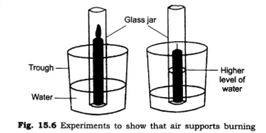
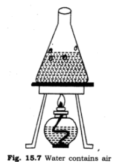

all ex and ques/ans is avlable in wedsite of ncert
1. What is the composition of air?
Ans: Air is mixture of nitrogen, oxygen, carbon dioxide, water vapour and a few other gases. Some dust particles may also be present in it.
2. Which gas in the atmosphere is essential for respiration?
Ans: Oxygen.
3. How will you show that air supports burning?
Ans: Take a small burning candle. Cover the burning candle with a glass jar. After few minutes the candle is extinguished. As the supply of air is stopped due to glass jar the burning of candle is also stopped. This experiment proves that air supports burning

4. How will you show that air is dissolved in water?

Ans: Take some water in a glass vessel or beaker. Heat it slowly on a tripod stand. Before the water begins to boil, look carefully at the inner surface of the vessel. You will see tiny bubbles on the inside. On heating, air dissolved in water escapes in the form of these bubbles.
5. Why does a lump of cotton wool shrink in water?
Ans: Lump of cotton wool has air among gaps of cotton fibres. When water replaces the air from these gaps, the cotton lump becomes heavy and also shrinks due to removal of air gaps.
6. The layer of air around the earth is known as………………….
Ans: Atmosphere
7. The component of air used by green plants to make their food, is………………….
Ans: Carbon dioxide.
8. List five activities that are possible due to presence of air.
Ans: The activities that are possible due to the presence of air, are:
(a) To make a simple firki
(b) To make a weather cock
(c) To breathe for survival
(d) For burning of substance
(e) For photosynthesis
9. How do plants and animals help each other in exchange of gases in the atmosphere?
Ans: Animals and plants use oxygen from air during respiration and release carbon dioxide gas in air. But green plants also release oxygen gas by using carbon dioxide during photosynthesis. Thus, we can say that animals and plants help each other in exchange of gases.